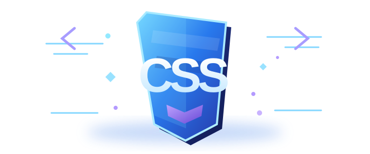

El diseño cobra vida.
CSS (Cascading Style Sheets) permite controlar la presentación visual de los documentos HTML: colores, tamaños, distribución, animaciones y adaptación a pantallas.
Explorá los temas
Selectores
Elementos, clases, IDs y combinadores.
Propiedades y valores
Colores, medidas, fuentes y fondos.
Cascada y especificidad
Herencia, prioridad y reglas CSS.
Modelo de caja
Margin, border, padding y content.
Flexbox
Distribución flexible en una dimensión.
CSS Grid
Diseños en filas y columnas.
Responsive design
Media queries y diseño adaptable.
Transiciones y animaciones
Transform, transition y keyframes.
Mapa de propiedades CSS
CSS no tiene etiquetas como HTML. En este mapa reunimos propiedades y conceptos, agrupados según lo que permiten modificar. Tocá una ficha para ampliarla y leer qué hace.
Diseño y distribución 8 propiedades
Tamaño y espacio 8 propiedades
Color y fondos 6 propiedades
Texto y tipografía 6 propiedades
Transformaciones y movimiento 6 propiedades
Adaptación y desbordamiento 6 conceptos
Mapa introductorio, no catálogo completo de CSS. Las propiedades se combinan con selectores, valores y reglas para construir estilos.
¿Qué es CSS?
CSS (Cascading Style Sheets u hojas de estilo en cascada) es el lenguaje que describe cómo se presentan los documentos HTML. Controla colores, tipografías, espacios, tamaños, distribución, adaptación a pantallas y animaciones.
¿En qué navegadores funciona?
Las propiedades y técnicas fundamentales de CSS funcionan en los navegadores modernos. Las diferencias aparecen con características recientes, como algunas consultas de contenedor, selectores avanzados o efectos nuevos. La compatibilidad depende de cada propiedad y de la versión del navegador, no de CSS como un todo.
Las barras son orientativas y no porcentajes medidos. Para decidir si usar una propiedad concreta, comprobá su tabla de compatibilidad en MDN o Can I use. Las versiones antiguas pueden necesitar alternativas.
Pequeñas pruebas de CSS
CSS cambia la apariencia del elemento sin modificar su contenido HTML.
¿Dónde aprender más CSS?
MDN Web Docs
Guías desde los fundamentos hasta selectores, cascada, Flexbox y Grid.
Estudiar CSS ↗ TUTORIAL INTERACTIVOW3Schools
Explicaciones breves y ejemplos editables de propiedades y diseños.
Practicar ↗ CURSO GRATUITOfreeCodeCamp
Ejercicios prácticos para aprender diseño web responsive con HTML y CSS.
Comenzar curso ↗ VIDEO · ESPAÑOLCursos en YouTube
Buscá cursos completos de CSS, Flexbox, Grid y responsive design.
Buscar tutoriales ↗